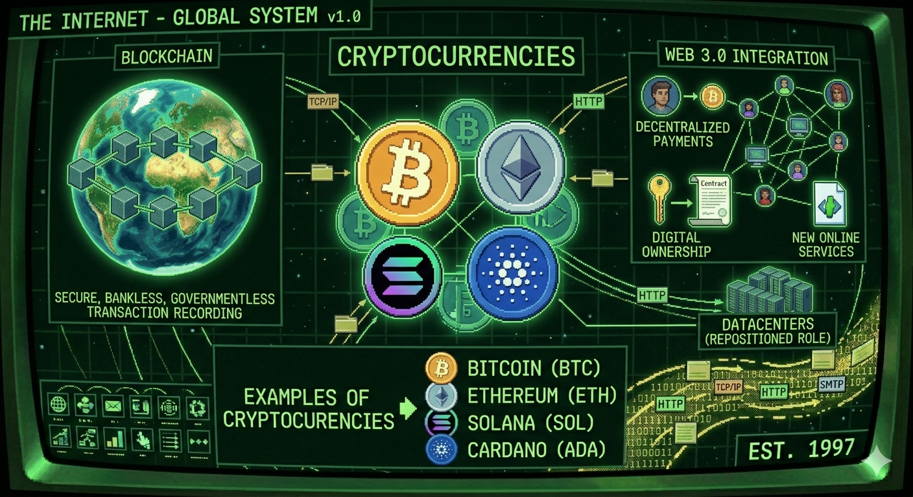

The Internet is a global system of interconnected computer networks that lets devices comunnicate and share information worldwide
The Internet connects computers and devices around the world.
Differences with World Wide Web (WWW)
The "Internet" is not the same as the "World Wide Web". The Internet is a network of computers connected to each other, while the World Wide Web is a system that runs on top of it, used to access and display information. Although the Internet and the World Wide Web are different, in everyday language the term “internet” is often used to refer to the entire system, including the web, apps, and online services.
The Internet and the World Wide Web are related, but they are not the same thing.
World Wide Web
The World Wide Web (WWW) is a system of web pages and websites that you access through the internet using a browser. As a simple idea it's the part of the internet you see and click on—websites, links, images, videos, pages.
The World Wide Web was created by Tim Berners-Lee in 1989 and made public in 1991.The World Wide Web began as a project at CERN, created to help scientists share information over the Internet.
Early web pages
The first websites were written directly in HTML. They were simple documents containing text, headings and links.
A very basic web page could look like this:
<html>
<head>
<title>My First Web Page</title>
</head>
<body>
<h1>Hello World</h1>
<p>Welcome to my website.</p>
</body>
</html>
Web 1.0 refers to the first generation of the internet, from the early 1990s to the early 2000s. Websites were mostly static, meaning users could only read information. Interaction was limited, and content was created mainly by website owners.
Web 2.0
Web 2.0 introduced user interaction and content creation. Starting in the early 2000s, social media platforms, blogs, wikis, and video sharing websites became popular. Users could comment, share content, and collaborate online.
Web 3.0
Web 3.0 is the current evolution of the internet. It focuses on decentralization, artificial intelligence, and giving users more control over their data. Technologies such as blockchain, cryptocurrencies, and smart contracts are often associated with web 3.0.
Web comparison
Version
Main idea
Typical examples
Web 1.0
Read-only websites
Personal pages, directories
Web 2.0
User participation
Blogs, social networks, wikis
Web 3.0
Decentralization and ownership
Blockchain, cryptocurrencies, smart contracts
Cryptocurrencies
Cryptocurrencies are digital currencies that use blockchain technology to record transactions securely without relying on banks or governments.
Cryptocurrencies are an important part of web 3.0 because they enable decentralized payments, digital ownership, and new online services.
Examples of cryptocurrencies:
Bitcoin (BTC)
Ethereum (ETH)
Solana (SOL)
Cardano (ADA)

Cryptocurrencies and blockchain technologies are key components of Web 3.0.